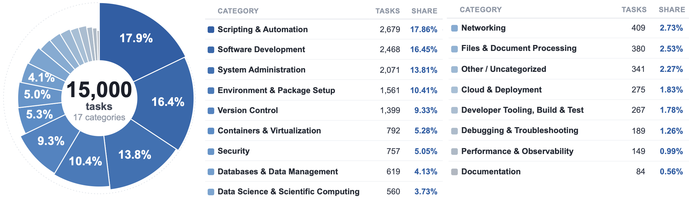
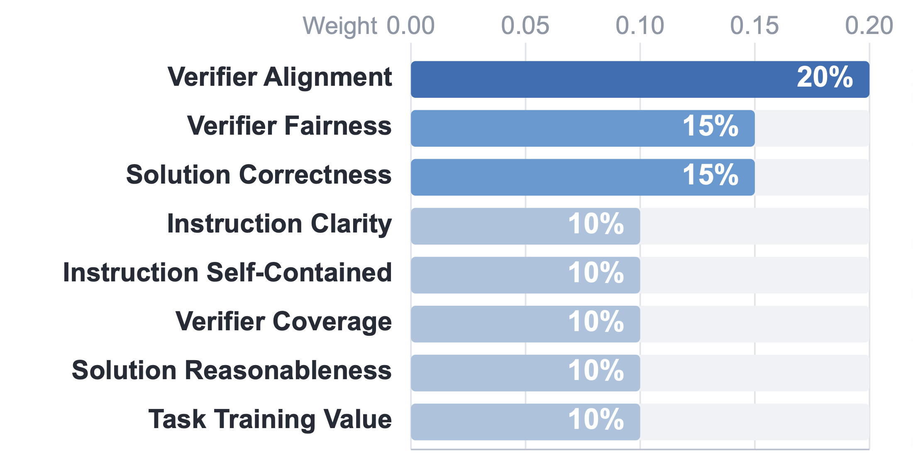
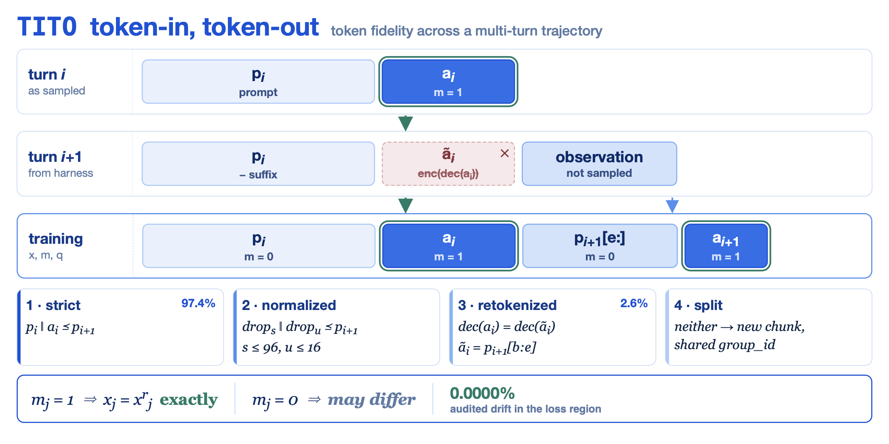
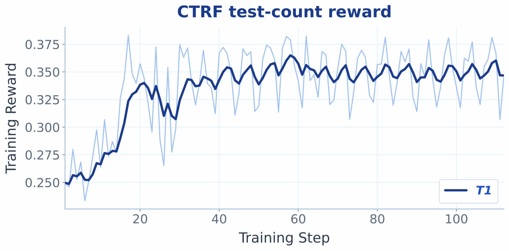
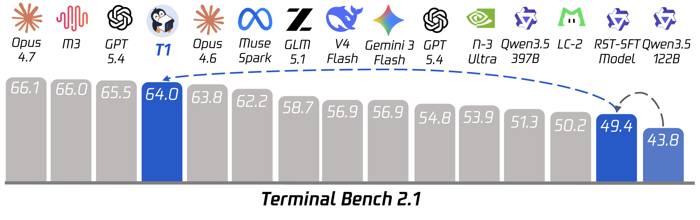
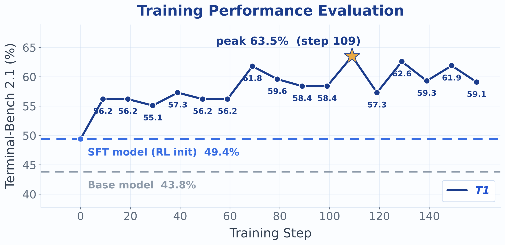
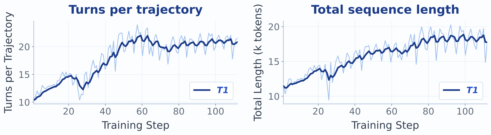
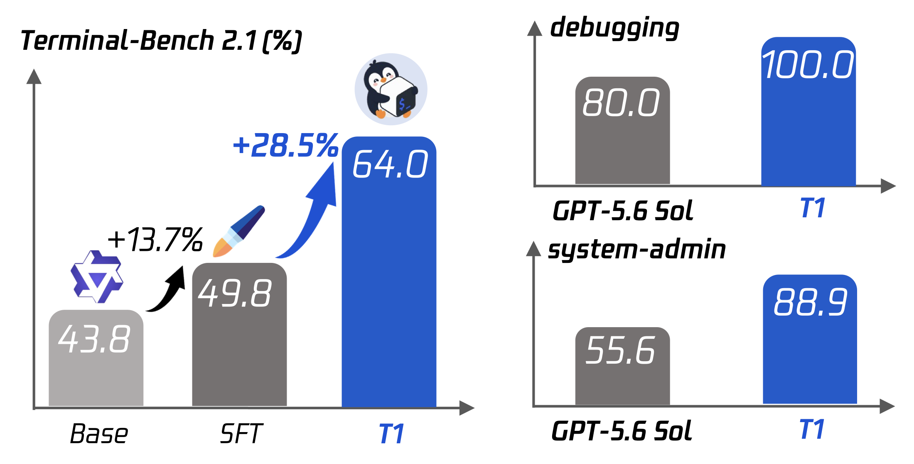

01为什么终端任务这么难Why terminal tasks are hard
Agent 的使用场景正在从简单的文件操作和对话问答，转向编程、科学发现这类长程任务，而 长程终端任务是其中格外重要的一类。我们的做法很直接：Agent 收到一段自然语言任务描述， 然后在一个隔离的云沙箱里反复"发命令 → 读输出"，最多 60 个 assistant 轮次、单条轨迹数万 token； 最后由任务自带的 pytest 验证器在同一个沙箱里执行，给出奖励。
训练系统把 Megatron（训练）和 SGLang（推理）通过 slime v0.3 的 RL 框架连起来， Agent harness 用的是 Harbor / Terminus-2。所有 Agent 相关逻辑都放在插件层，而不是 fork 框架。 相比 RLHF 式或短答案式 RL，这个设定有三个本质困难：
Agent usage has shifted from simple file manipulation and conversational QA toward long-horizon tasks such as coding and scientific discovery, among which long-horizon terminal tasks stand out as a particularly important focus. Our setup is direct: the agent receives a natural-language task, then alternates between emitting shell commands and reading their output inside an isolated cloud sandbox, for up to 60 assistant turns and tens of thousands of tokens per trajectory. A trajectory is scored by executing the task's own pytest verifier inside the same sandbox.
The training system connects Megatron (training) and SGLang (inference) through the slime v0.3 RL framework, with the agent harness provided by Harbor / Terminus-2. All agent-specific logic lives in a plugin layer rather than a framework fork. Three properties make this setting substantially harder than RLHF-style or short-answer RL:
训练序列会打到 64k–84k token 的墙，由多达 60 段模型/工具片段拼成，而只有模型生成的 token 才允许携带损失。每个轮次边界都是 harness 做「解码 → 解析 → 重新套模板 → 重新编码」往返的机会，一不小心训练器条件化的 token 序列就变了。
Training sequences reach the 64k–84k-token wall, are assembled from up to 60 alternating model/tool segments, and only model-generated tokens may carry loss. Every turn boundary is an opportunity for the harness's decode → parse → re-template → re-encode round trip to change the token sequence the trainer conditions on.
专家权重占了总参数的 95.5%（116.0B / 121.4B），每个 token 在每层从 256 个专家里离散地选 8 个。推理栈和训练栈之间极小的数值差异就足以翻转这个离散选择——于是训练侧的前向可能把梯度送进了另一批参数。
Expert weights are 116.0B of the 121.4B total parameters (95.5%), and each token engages 8 of 256 experts per layer via a discrete top-k router. Small numeric differences between the inference and training stacks can flip these discrete choices, so the training-side forward may route gradient through different parameters.
一个 rollout batch 要烧掉数百沙箱小时，而二值的「任务是否解决」只提供 1 bit 信息。我们第一次 122B RL（TMax 池 + 二值奖励）始终没能超过 SFT 基线。
A full rollout batch costs hundreds of sandbox-hours, while a binary task-solved reward provides one bit per trajectory. Our first 122B RL campaign (TMax pool, binary rewards) never exceeded the SFT baseline.
token 漂移在序列层面破坏 PPO 的重要性比率，路由漂移在参数层面破坏它。我们把二者当成正交问题分别解决：TITO 管 token，R³ 路由回放管专家。
Token drift breaks PPO's importance ratio at the sequence level; routing divergence breaks it at the parameter level. We treat these as orthogonal and fix them separately: TITO for tokens, R³ routing replay for experts.

它是一份系统报告，不是算法论文。四个贡献：(1) 超大 MoE Agent RL 的稳定化栈的代码级记录 （TITO、R³、critic 调度及周边容错机制）；(2) 稠密过程奖励的设计与实测行为，包括两个失败的奖励变体及原因； (3) 在 95 GiB 显存的 GPU 上把一对 122B 的 PPO actor–critic 养活数天所需的基础设施； (4) 一份坦诚的失败记录——我们觉得它至少和成功一样有教益。
This is a systems report, not an algorithms paper. Its contributions are (1) a code-level account of the stabilization stack for very large MoE agent RL (TITO, R³, critic schedule, and the surrounding failure-handling machinery); (2) the design and measured behavior of the dense process reward, including two reward variants that failed and why; (3) the infrastructure required to fit and keep alive a PPO actor–critic pair of 122B models on 95 GiB GPUs for days; and (4) a candid record of the failures encountered, which we found at least as instructive as the successes.
02模型、任务与数据Model, task and data
模型Model
底座是一个 48 层的混合注意力 MoE decoder：hidden size 3072，32 个注意力头配 2 个 KV group（GQA）， gated attention output、RMSNorm、部分 RoPE，词表 248,320。注意力按 3:1 的模式交替 ——三层 GatedDeltaNet 线性注意力接一层全注意力。每一层都带 MoE FFN：256 个专家， fp32 下 softmax top-8 路由，外加一个门控共享专家。总参数 121.4B，其中 116.0B 是专家权重， 每 token 激活约 10B。RL 阶段关闭 MoE 的辅助负载均衡损失。
起点有两个 checkpoint：base 模型（Terminal-Bench 2.1 上 43.8%）和一个称为 RST 的 SFT checkpoint（49.4%）。 本报告的主力实验都从 RST 出发。
The backbone is a 48-layer hybrid-attention MoE decoder: hidden size 3072, 32 attention heads with 2 KV groups (GQA), gated attention output, RMSNorm, partial RoPE, vocabulary 248,320. Attention alternates in a 3:1 pattern — three GatedDeltaNet linear-attention layers, then one full-attention layer. Every layer carries an MoE FFN: 256 experts, softmax top-8 routing in fp32, plus a gated shared expert. Total parameters 121.4B, of which 116.0B are expert weights; active parameters per token are ~10B. During RL the MoE auxiliary load-balancing loss is disabled.
Two starting checkpoints appear: the base model (43.8% on Terminal-Bench 2.1) and an SFT checkpoint referred to as RST (49.4%). The main campaigns of this report all start from RST.
任务与 Agent harnessTask and agent harness
Agent 是 Terminus-2（经由 Harbor）：一个 JSON 工具调用循环，assistant 每轮发 shell 命令，tool 每轮返回终端输出。 生产配置的单次试验上限为：最多 60 轮、Agent 墙钟 3600 秒、验证器墙钟 900 秒、chat template 里关闭 thinking， 以及主动上下文压缩（Agent 自己总结历史）。沙箱是 Daytona 云容器（10 GiB 磁盘），每次试验创建后销毁。
一个任务就是一个自包含目录：task.toml 固定元数据与限额，instruction.md 描述一个长程终端任务
（比如：在两百个 commit 里做 bisect、修掉缺陷、重新构建到指定路径、并证明它成立），
environment/ 放基础镜像和资源上限，tests/ 放验证器，solution/ 放 Agent 永远看不到的参考解。
验证器是承重结构：它跑 pytest --ctrf 并吐出逐测试的通过/失败记录，
于是奖励是被执行出来的而不是被建模出来的，且分辨率细到单条断言而非每轨迹 1 bit。
The agent is Terminus-2 (via Harbor): a JSON-tool-call loop in which each assistant turn issues shell commands and each tool turn returns terminal output. Per-trial limits in the production configuration: at most 60 turns, agent wall-clock 3600 s, verifier wall-clock 900 s, thinking disabled in the chat template, and proactive context compaction (the agent summarizes its own history). Sandboxes are Daytona cloud containers (10 GiB disk), created and destroyed per trial.
A task is a self-contained directory: task.toml fixes metadata and per-trial
limits, instruction.md states a long-horizon terminal mission (bisect two
hundred commits, repair the defect, rebuild to a named path, and prove it),
environment/ carries the base image and resource caps, tests/
holds the verifier, and solution/ a reference solution the agent never sees.
The verifier is the load-bearing part: it runs pytest --ctrf
and emits a per-test pass/fail record, so the reward is executed rather than
modelled, and its resolution is per assertion rather than one bit per trajectory.
训练数据池Training data pools
- TMax-15k：14,601 个任务，从公开的
allenai/tmax语料转成 terminal-bench 布局。它的验证器只给二值奖励，没有逐测试记录，所以这里只能做二值 RL。 - RST-38k：37,484 个合成任务（"递归任务合成"，未过滤）。
- Strategy-15k：从多轮合成里由 LLM 审计挑出的 15,000 个任务，八个维度的加权质量分，对隐藏需求、测试泄漏、解法投机、验证器过弱这四类问题硬性拒绝。任务跑
pytest --ctrf，逐测试结果被记录；启动前的预检在抽样任务中确认 93%（56/60）带 CTRF。这个池承载了所有稠密奖励实验。
- TMax-15k: 14,601 tasks converted from the public
allenai/tmaxcorpus into terminal-bench layout. Its verifiers emit only a binary reward — no per-test record — so only binary rewards are possible here. - RST-38k: 37,484 synthesized tasks ("Recursive Task Synthesis", unfiltered).
- Strategy-15k: 15,000 tasks selected from the synthesis rounds by an LLM audit: a weighted quality score over eight dimensions with hard rejection for hidden requirements, test leakage, solution shortcuts, or verifiers too weak to validate the goal. Tasks run
pytest --ctrf, so per-test pass/fail is recorded; a launch pre-flight verified CTRF presence in 93% of sampled tasks (56/60). This pool carries all dense-reward campaigns.


tests/ 实际强制内容不一致
——即隐藏需求——会让一个任务作为 RL 信号彻底失效：Agent 因为一条它从未被告知的判据而受罚。
筛选分五个阶段、跨 15 轮改写完成，包含可执行校验（参考解必须真的在容器里通过自己的验证器）、
语义审查（5,902 通过 / 3,251 边界 / 5,847 拒绝）、只改指令不动测试的修复（6,875 个任务）以及一次对抗式复审。
tests/ enforces — a hidden
requirement — makes a task unusable as an RL signal: the agent is punished for
failing a criterion it was never shown. Selection ran in five stages over 15 rewrite
rounds, including executable validation (the reference solution genuinely passes
its verifier in-container), a semantic pass (5,902 accept / 3,251 borderline / 5,847
reject), instruction-only repair (6,875 tasks, leaving tests/ untouched), and
an adversarial re-audit.
评测协议与算力Evaluation protocol and compute
留出评测是 Terminal-Bench 2.1 的 89 个终端任务，指标为解决比例，走与训练完全相同的 harness 和沙箱后端， 每任务 3 次尝试，温度 1.0、top-p 0.95、top-k 20。 评测总超时很关键：早期 3600 秒的墙会静默取消约 14 个慢任务，把 base 模型的测量分从约 0.43 拖到 0.371； 生产配置把它抬到 10,800 秒，并加了一道验收门——attempt 覆盖率不等于 1.0 就拒绝开始训练。
生产稠密奖励实验用 128 张 GPU：64 张训练（TP2 × PP4 × CP4 ⇒ DP2，EP16，每流水段 12 层） + 64 张推理（8 个独立 SGLang 引擎，各 TP8），每步 512 条轨迹，约 57 分钟一步。 早期二值奖励实验用 88 张卡，batch 256 时约 33 分钟一步。
Held-out evaluation is Terminal-Bench 2.1: 89 terminal tasks, scored as the fraction resolved, run through the same harness and sandbox backend as training, with 3 attempts per task at temperature 1.0, top-p 0.95, top-k 20. The evaluation-total timeout matters: an early 3600 s wall silently cancelled ~14 slow tasks and dragged the base model's measured score from ~0.43 to 0.371; production configs raise it to 10,800 s. A baseline-eval acceptance gate refuses to start training unless attempt coverage is exactly 1.0.
The production dense-reward run uses 128 GPUs: 64 training GPUs (TP2 × PP4 × CP4 ⇒ DP2, EP16, 12 layers per pipeline stage) and 64 inference GPUs (8 independent SGLang engines at TP8), batch 512 trajectories per step, ~57 min/step. Earlier binary-reward runs used 88 GPUs, measured at ~33 min/step at batch 256.
03训练系统Training system
我们构建在 slime v0.3.0 之上，它把 Megatron 训练后端和 SGLang 推理引擎放进同一个 Ray 应用。 学习和 rollout 占用互不重叠的 GPU，并且流水线深度为一步：第 t 步在训练时， 第 t+1 步的 batch 已经在生成了。上游提供了 PPO critic 脚手架、路由记录/回放核心、 token 级动态批处理和按角色的优化器配置；我们的终端 Agent 集成是增量式的，通过公开扩展点挂载而非 fork ——核心改动约 1k 行，插件约 7.8k 行。
We build on slime v0.3.0, which places a Megatron training backend and SGLang inference engines under one Ray application. Learning and rollout occupy disjoint GPUs and are pipelined one step deep: while step t trains, the batch for step t+1 is already generating. Upstream supplies the PPO critic scaffolding, the routing record/replay core, token-level dynamic batching, and per-role optimizer configuration; our terminal-agent integration is additive, attached through public extension points rather than a fork — ~1k lines of core delta, ~7.8k of plugin.

Rollout 与轨迹装配Rollout and trajectory assembly
从 SFT checkpoint 出发，SGLang 向大量并发试验提供行为策略。调度器会过采样： 启动比 batch 所需更多的试验，接受最先完成的 B 个，取消长尾——这是在一个完成时间重尾的环境里 约束单步时长的关键手段。Agent 与引擎交换的是 token id 而不是文本， 并拿回采样到的 id、逐 token 的对数概率和逐 token 的专家路由。
完成的试验进入轨迹装配器：被采样的 assistant token 保留其 id、对数概率和单位损失掩码； 工具观测和模板胶水以掩码形式进入。路由行与 token 流严格同步推进，每个试验的 CTRF 记录成为它的稠密奖励。 最终发出的训练 batch 把 token id、损失掩码、推理侧对数概率和被路由的专家放在一起携带 ——任何触碰逐 token 数据的环节都必须用相同的偏移量变换这四者，这是整条流水线的中心不变式。
Starting from the SFT checkpoint, SGLang serves the behaviour policy to many concurrent trials. The scheduler oversamples: it launches more trials than the batch requires, accepts the first B to complete, and cancels the straggler tail, which is what bounds step time against an environment whose completion times are heavy-tailed. The agent exchanges token ids rather than text with the engines and receives sampled ids, per-token log-probabilities, and per-token expert routing.
Completed trials enter the trajectory assembler: sampled assistant tokens keep their ids, log-probabilities and a unit loss mask; tool observations and template glue enter masked. Routing rows advance in lock-step with the token stream, and each trial's CTRF record becomes its dense reward. The emitted train batch carries token ids, loss masks, inference log-probabilities and routed experts together — every stage that touches per-token data transforms all four by the same offsets, which is the pipeline's central invariant.
Critic 与 actor 的更新次序Critic and actor updates
Megatron 消费这个 batch。任何策略移动之前先有一段简短的 critic 预热； 之后每一步都先跑 critic：它的更新前价值同时喂给优势估计器和它自己的裁剪价值损失， 并以 actor 的 30 倍学习率训练，因为它的目标是一个监督回归。 随后 actor 在行为快照下重算旧的对数概率，走一步裁剪代理目标。 奖励落在最后一个响应 token 上，由 GAE 在整个长程上做信用分配；由于每任务只采 1 条样本， 没有组基线，critic 是唯一的基线。又因为 actor 和 critic 同样大小、靠强制 offload 共享 GPU， 这个次序也是显存唯一允许的次序。
Megatron consumes the batch. A brief critic warm-up precedes any policy movement, after which each step runs the critic first: its pre-update values feed both the advantage estimator and its own clipped value loss, and it trains at 30× the actor's learning rate because its target is a supervised regression. The actor then recomputes old log-probabilities under the behaviour snapshot and takes one clipped-surrogate step. The reward lands on the final response token and GAE performs credit assignment across the horizon; with one sample per task there is no group baseline, so the critic is the only baseline. Because actor and critic are the same size and share GPUs by forced offload, this ordering is also the only one memory permits.
权重同步Weight synchronization
更新后的权重每步向所有引擎发布一次，发布前先让生成静默，保证没有请求跨越两个策略版本。 行为快照在同一个 barrier 内轮换，于是重要性比率的分母始终是真正采样了这个 batch 的那个策略： 流水线带来的一步滞后是恰好一步的普通 off-policy，而不是未建模的偏差。 这样 rollout 就藏在训练之下，单步时长是 max(rollout, training) 而不是二者之和。
Updated weights are published to every engine once per step, with generation quiesced first so no request spans two policy versions. The behaviour snapshot rotates inside the same barrier, so the importance ratio's denominator remains the policy that actually sampled the batch: the one-step lag introduced by pipelining is ordinary off-policyness of exactly one step rather than unmodeled bias. Rollout thus hides under training, making step time max(rollout, training) instead of their sum.
04PPO
PPO 核心刻意做得很朴素。裁剪比率 ε = 0.2（对称），KL 惩罚与 KL 损失关闭，
熵奖励关闭（仍以无梯度方式记录），MoE 辅助负载均衡损失关闭。
优势估计器为 ppo（critic + GAE），γ = 1、λ = 1，价值裁剪 0.2，
锚定 critic 的更新前价值。每个 prompt 采 1 条样本（因此无组归一化、无组基线），
batch 512 条轨迹，token 预算墙 84k（二值奖励实验为 64k）。
优化器 Adam(0.9, 0.98)、weight decay 0.1、恒定学习率，
actor 1.0 × 10⁻⁶、critic 1.5 × 10⁻⁵（30× 差距），critic 热加载后再做 2 步 critic-only 重校准。
精度为 bf16 权重 + fp32 梯度累积，路由打分 fp32 softmax，不使用 fp8。
PPO 比率的分母是训练侧重算的旧对数概率，TIS 修正只记录、不施加到损失。
3 个 epoch × 15,000 任务 ÷ batch 512 = 90 步。
The PPO core is deliberately spare. Clip ratio ε = 0.2 (symmetric); KL penalty
and KL loss off; entropy bonus off (still logged no-grad); MoE auxiliary load-balancing loss off.
The advantage estimator is ppo (critic + GAE) with γ = 1, λ = 1, and
a value clip of 0.2 anchored to the critic's pre-update values. Each prompt is
sampled once (hence no group normalization and no group baseline), the batch is
512 trajectories, and the token-budget wall is 84k (64k for the binary-reward
runs). The optimizer is Adam(0.9, 0.98) with weight decay 0.1 and a constant
learning rate, at 1.0 × 10⁻⁶ for the actor and 1.5 × 10⁻⁵ for the critic (a 30×
gap), with the critic warm-loaded and given 2 critic-only re-calibration steps. Precision is bf16
weights with fp32 gradient accumulation, router scores in fp32 softmax, no fp8. The denominator of
the PPO ratio is the training-side recomputed old log-probabilities, and TIS correction is
recorded but not applied to the loss. Three epochs over 15,000 tasks at batch 512 is 90 steps.
05让 MoE 的 RL 训练稳下来Stabilizing MoE RL training
PPO 的重要性比率隐含一个前提：训练器评估的，必须等于采样器在同一版本上真正实现的。 在这个设定下它以两种方式失效，而且这两种失效相互独立——修好一个不会碰到另一个。
PPO's importance ratio rests on one requirement: what the trainer evaluates must equal what the sampler realized at the same policy version. In this setting it fails in two ways, and the two are independent — enforcing one leaves the other's failure mode untouched.
- token 保真失效：harness 把每条 assistant 消息以解析后的文本持久化， 每轮又把历史通过 chat template 重新渲染一遍。于是某一轮的输出被重建为「先解码再编码」的结果， 而只要解析做了规范化、或模板胶水在边界处重新分词，这个往返就不是恒等映射。
- 路由保真失效：SGLang 和 Megatron 是两套不同的数值实现，路由打分必然有微小差异。 而 top-k 是不连续算子，只要第 k 与第 k+1 名的间隔小到与这个数值差异同量级， 被选中的专家集合就会翻转；一次翻转就换掉了产生该样本的那个子网络中的一个专家， 重要性比率于是在静默中比较着两个不同的策略。
- Token fidelity fails because the harness persists each assistant message as parsed text and re-renders history through the chat template every turn, so a turn's output is reconstructed as encode-of-decode — and that round trip is not the identity whenever parsing normalizes the message or template glue re-tokenizes at the boundary.
- Routing fidelity fails because SGLang and Megatron are distinct numerical implementations, so their router scores differ slightly. As top-k is a discontinuous operator, an arbitrarily small difference flips the selected set whenever the margin between rank k and rank k+1 is comparable to it; one flip swaps an expert of the sub-network that produced the sample, and the importance ratio silently compares two different policies.
稠密模型根本不会犯第二种错，短程任务会稀释第一种错。但一个发出 20–60 轮轨迹的 122B MoE 会在约 10⁴ 个 token 上 同时犯这两种错，而误差是乘性累积的：缓解前逐 token 的平均对数概率偏差 0.021， 在约 3 × 10⁴ 个 token 上会产生一个 PPO 裁剪无法与真实策略移动区分开的比率误差。
Dense models cannot violate the second identity at all, and short horizons attenuate the first. But a 122B MoE emitting 20–60-turn trajectories violates both across ~10⁴ tokens, and the error compounds multiplicatively: a mean per-token log-probability discrepancy of 0.021 before mitigation, over ~3 × 10⁴ tokens, produces a ratio error the PPO clip cannot separate from genuine policy movement.
TITO：token 进，token 出TITO: token-in, token-out
TITO 用构造的方式强制 token 保真：训练器消费的正是引擎发出的那些 id，反之亦然。 在我们控制两端的地方，「解码再编码」被直接消除；在 harness 强制它发生的地方，则被检测并修复。 Harbor 后端双向传输 token id，因此编码每轮只做一次，而不是每次重放历史都做一次。 轮次之间，装配器依次尝试四种越来越弱的前缀关系：strict（严格前缀，这就是精确的 TITO）、 normalized（在一个 97 × 17 的有限网格上做有界修复，因此是可审计的而非启发式的）、 retokenized（token 层面全面失配时退化到文本空间的相等性，靠生成时的偏移映射定位区间）、 以及 split（都不成立就切成共享 group id 的新 chunk）。 关键是：harness 重新分词后的那份拷贝永远不会进入训练流，进入的始终是被采样的原始 id。
TITO enforces token fidelity constructively: the trainer consumes exactly the ids the engine emitted, and vice versa. Where we control both endpoints, encode-of-decode is eliminated; where the harness forces it, it is detected and repaired. The Harbor backend transmits token ids in both directions, so encoding happens once per turn rather than once per history replay. Between turns the assembler tests four progressively weaker prefix relations: strict (exact prefix — this is exact TITO), normalized (a bounded repair over a finite 97 × 17 grid, which makes it auditable rather than heuristic), retokenized (when token matching fails everywhere, fall back to equality in text space and locate the span by a generation-time offset map), and split (neither holds → a new chunk sharing the same group id). The key property: the harness's re-tokenized copy never enters the training stream; the sampled ids do.

这里的保证是单边但锐利的：掩码为 1（即承载损失）的位置，其 token 必然与采样时逐位相同； 可能有偏差的只是后续轮次的条件化上下文。一次离线审计（1,402 个样本、2725 万条路由行）给出了实测数字： 97.39% 的位置逐位对齐，2.61% 属于重新分词或占位集合， 而落在损失区内的漂移比例是 0.0000%——漂移集合与损失区完全不相交。 值得一提的是，轨迹级的标志位是所有轮次「均为 strict」的合取，因此在约 99.9% 的轨迹上都读作 False； 只有逐 token 的统计才看得出真正要紧的那部分漂移其实是零。
The guarantee is one-sided but sharp: at every position whose mask is 1 (i.e. loss-bearing), the token is bit-identical to what was sampled; what can deviate is only the conditioning context of later turns. An offline audit (1,402 samples, 27.25M routing rows) gives the measured numbers: 97.39% of positions exactly aligned, 2.61% in the re-tokenized or placeholder sets, and 0.0000% drift inside the loss region — the drift set is disjoint from the loss region. Note that the trajectory-level flag is a conjunction over all turns being strict, and so reads False on ~99.9% of trajectories; only per-token accounting reveals that the drift that matters is zero.
R³：rollout 路由回放R³: rollout routing replay
R³ 同样用构造的方式强制路由保真：记录推理选择了哪些专家，再约束训练前向复用它们。 打过补丁的 SGLang 逐 MoE 层记录 top-k 索引，以 base64 的 int32 张量返回； 所有 48 层全部保存，不压缩、不抽样、不做门控，代价是每 token 1536 字节 ——一条 33k token 的轨迹约 48 MiB。路由行与 token 走完全相同的拼接逻辑， 保证第 j 行索引的就是第 j 个 token。在被修复过的边界上，某一行可能不属于任何一轮的记录， 此时构造器只在不可能影响任何梯度的位置替换为邻居行，否则直接报错。 路由缺失是硬错误，rollout 会中止而不是丢样本——丢样本等于把 batch 条件化在「记录成功」这个事件上，会引入偏差。
R³ enforces routing fidelity by construction: record the expert sets inference selected, and constrain the training forward to reuse them. A patched SGLang records top-k indices per MoE layer and returns a base64 int32 tensor; all 48 layers are stored with no compression, subsampling or gating, at a cost of 1536 bytes per token — about 48 MiB for a 33k-token trajectory. Routing rows ride exactly the same stitching as tokens, so row j indexes token j. At repaired boundaries a row may exist in no turn's capture; the builder then substitutes a neighbour row only where no gradient can be affected, and otherwise raises. Absent routing is a hard error and the rollout aborts rather than dropping the sample — dropping would condition the batch on the event "capture succeeded" and bias it.
注入这一侧，我们包装而非 fork Megatron 的 router：替换的是「选择」算子，「门控」仍走实时打分。 专家索引来自记录（无梯度），门控权重从当前参数的实时打分里 gather（梯度照常流动）。 用查表替代 top-k 消除了那个让微小数值差异变得要紧的不连续性， 而从实时打分读门控又让 router 保持可训练。每次前向之前，路由张量都会被施加与 token 流完全相同的 序列并行、padding、上下文并行 zig-zag 切分等变换——任何别的组合顺序都会错位并静默回放错误的专家， 所以每个样本都断言了行数与 token 数的关系。critic 从不回放：它的回归目标不需要对采样器的行为保真。
On the injection side we wrap rather than fork Megatron's router: the selection operator is substituted while gating stays on live scores. Expert indices come from the record (no gradient); gating weights are gathered from the live scores of the current parameters (gradient flows). Replacing top-k by a table lookup removes the discontinuity that made tiny numeric differences consequential, while reading gating from live scores keeps the router trainable. Before each pass, the routing tensor is put through exactly the token pipeline's transformations — sequence parallelism, padding, the context-parallel zig-zag slice — because any other composition would misalign rows and silently replay wrong experts, which is why the row-count relation is asserted per sample. The critic never replays: its regression target needs no behavioural fidelity to the sampler.
Critic 侧的稳定性Critic-side stability
这里的 PPO 用一个独立、全尺寸的 critic：第二个 122B 模型，把 LM head 换成最后一个流水段上的标量价值头。 它与 actor 共享同一个 placement group（不额外占卡），slime 强制训练侧 offload，让两个 122B 模型分时复用同一批 GPU ——每一个单独都必须塞进 95 GiB，这个约束直接驱动了后面的显存工程。
PPO here uses a separate, full-size critic: a second 122B model whose LM head is a scalar value head on the last pipeline stage. It shares the actor's placement group — no extra GPUs — and slime forces training-side offload so the two 122B models time-multiplex the same GPUs. Each alone must fit in 95 GiB, which is the constraint that drives the memory engineering below.
解释方差（EV）是这里最重要的健康指标：它是价值函数所解释的回报方差比例。 EV = 0 意味着 critic 不比预测 batch 均值更好；关键在于这个量下无界， EV < 0 意味着减去价值函数是在给优势增加方差而不是减少方差。 冷启动时 EV 从 −33.6 开始——新初始化的价值头的残差携带了约 34 倍于回报的方差 ——那次实验大约用前一半时间在偿还这个赤字。热加载直接消除了它： 稠密奖励实验从 0 附近开始，最终稳定在 0.71–0.86。这也解释了为什么 2 步 critic-only 就够， 而冷启动需要几十步：优势从第一次更新起就是方差被降低过的，而不是在前三分之一训练里被放大的。
Explained variance (EV) is the health metric that matters here: the fraction of return variance the value function accounts for. EV = 0 means the critic is no better than predicting the batch mean; crucially the quantity is unbounded below, and EV < 0 means subtracting the value function adds variance to the advantage instead of removing it. Cold-started, EV begins at −33.6 — the fresh value head's residuals carry ~34× the variance of the returns — and roughly the first half of that campaign pays down the deficit. Warm-loading removes it outright: the dense-reward run starts near 0 and settles at 0.71–0.86. This is why 2 critic-only steps suffice where a cold start needs tens: advantages are variance-reduced from the first update rather than variance-inflated for the first third of training.

实测效果Measured effect
两个机制合起来把训推对数概率差距从 0.021 降到 0.013， 并且在整个 112 步里稳定保持在 0.0110–0.0144 这个很窄的带内。 残余的 0.013 非零是符合预期的：R³ 对齐的是专家选择而非 kernel 数值， 而且 reference 和 critic 的前向按设计自由路由。 同样值得说明的是，这个指标缓慢上飘不是回退：它度量的是训练策略与生成该 batch 的权重之间的距离， 策略正当地进步时它本来就会变大。
Together the two mechanisms reduce the train–inference log-probability gap from 0.021 to 0.013, holding a narrow 0.0110–0.0144 band for all 112 steps. That the residual 0.013 is nonzero is expected: R³ aligns expert selection but not kernel numerics, and the reference and critic paths route freely by design. Equally worth stating: this metric drifting slowly upward is not a regression — it measures the distance between the training policy and the weights that generated the batch, which grows as the policy legitimately improves.

① RL 期间不加任何 router 辅助损失。负载均衡的压力会和 R³ 打架 （我们要求 router 复现 rollout 的选择，而不是重新均衡），并且引入一个与奖励无关的梯度。
② 超长样本无法用 token 预算限制住。slime 的 first-fit 打包会把超长样本 单独放进它自己的 bin 且保持全长，所以一条 40k token 的轨迹会自成一个 micro-batch， 与「每 GPU 最大 token 数」这个旋钮无关。所有想用那个旋钮修长序列 OOM 的尝试都是构造上注定失败的； 真正的杠杆是序列墙和上下文并行。
③ Triton 冷编译风暴看起来完全像 NCCL 挂死。变长轨迹 × 动态批处理每步会产生几十种 padding 形状， 每种都要 JIT 编译 GatedDeltaNet kernel 若干分钟。某次一个 rank 卡在 30 分钟以上的编译里， 它的 15 个专家并行同伴在 MoE all-to-all 上等待，最后 watchdog 杀掉的是那些同伴。 解法是更粗的 padding 粒度、节点本地的持久 Triton 缓存、120 分钟的 NCCL 组超时和超时即 dump 的 flight recorder。
① No auxiliary router losses during RL. Load-balancing pressure fights R³ (the router is asked to reproduce rollout choices, not re-balance) and adds a non-reward gradient.
② Oversized samples cannot be capped by token budgets. slime's first-fit packer places an oversized sample alone in its own bin at full length, so a 40k-token trajectory forms its own micro-batch regardless of the max-tokens-per-GPU knob. Every attempt to fix long-sequence OOMs with that knob failed by construction; the real levers are the sequence walls and context parallelism.
③ Triton cold-compile storms look exactly like NCCL hangs. Variable-length trajectories × dynamic batching produce dozens of padded shapes per step, each JIT-compiling GatedDeltaNet kernels for minutes. In one incident a single rank sat in a >30-min compile while its 15 expert-parallel peers waited in the MoE all-to-all; the watchdog killed the peers. Mitigations: coarser padding granularity, a persistent node-local Triton cache, 120-min NCCL group timeouts, and flight-recorder dumps on timeout.
06稠密奖励：CTRF 测试计数Dense reward: the CTRF test count
第一次 122B 实验在 TMax 上用朴素的二值「任务是否解决」奖励。它在 40 步内把 base 模型从 43.8% 推到 47.2%， 但始终没有超过 SFT 的 49.4%。两个结构性读解：数据池相对 RST 太容易（没有可学的头部空间）， 而对那些验证器里本来就含有许多可独立检查的断言的任务来说， 「每条耗费数千沙箱秒的轨迹只给 1 bit」是一个极低的信号率。那次实验最终只留下一个用途 ——在便宜且稳定的数据上把 critic 预热好。
The first 122B campaign trained on TMax with the plain binary task-solved reward. It moved the base model from 43.8% to 47.2% within 40 steps, but never exceeded the SFT checkpoint's 49.4%. Two structural readings: the pool is too easy relative to RST (little headroom to learn), and one bit per multi-thousand-sandbox-second trajectory is a very low signal rate for tasks whose verifiers actually contain many individually checkable assertions. The campaign was retained for exactly one purpose — warming up the critic on cheap, stable data.
转折点是让奖励可执行且有分辨率。每个任务的 tests/test.sh 在沙箱里跑
pytest --ctrf，验证器因此吐出一份标准的 CTRF JSON，里面有逐测试的汇总。
rollout 之后，奖励钩子读回每个试验的 verifier/ctrf.json，计算：
The turning point was making the reward executable and resolved. Each task's
tests/test.sh runs pytest --ctrf inside the sandbox, so the verifier
emits a standard CTRF JSON with a per-test summary. After rollout, the reward hook reads each
trial's verifier/ctrf.json back and computes:
两个设计决定值得展开：
Two design decisions are worth spelling out:
- 用绝对计数，不用比率。比率会把每个任务都封顶在 1.0，抹平多测试难任务的信号。 用绝对计数，一个 40 测试的任务最高能拿到 2.0（在 RST-38k 上实测到过 2.75）， 于是更难的任务按比例携带更多学习信号。这个尺度由 PPO 的 critic + GAE 去吸收。
- 固定的全局尺度。S = 20 大约位于数据池测试数分布的 p90（中位数 4，p90 约 19，最大约 35）。 如果改用每个 batch 的最大值，奖励尺度就会一步一步漂移，给 critic 一个前后不一致的回归目标； 跨步一致性正是价值函数可学的前提。
- 兜底。CTRF 缺失或无法解析时，该试验回退到二值终局奖励， 所以一个真正被解决的任务绝不会得零分；解析失败按来源打标签以便观测。
- Absolute count, not ratio. A ratio caps every task at 1.0, flattening the signal for hard many-test tasks; with the absolute count a 40-test task can earn up to 2.0 (up to 2.75 observed on RST-38k), so harder tasks carry proportionally more learning signal. PPO's critic + GAE absorbs the scale.
- Fixed global scale. S = 20 sits near the p90 of the pools' test-count distribution (median 4, p90 ~19, max ~35). A per-batch maximum would make the reward scale drift step to step and hand the critic an inconsistent regression target; cross-step consistency is what makes the value function learnable.
- Fallbacks. If CTRF is missing or unparsable the trial falls back to the binary terminal reward, so a genuinely solved task never scores zero; parse failures are tagged by source for observability.
这里的「稠密」指的是奖励的取值分辨率（0、1/20、2/20 …），不是它的放置位置： 标量仍然只加在每个轨迹 chunk 的最后一个响应 token 上，由 critic + GAE 在 60 轮的长程上做时序信用分配。 没有势函数式 shaping，也没有逐轮奖励。PPO 下奖励原样流入 critic：不做组归一化， 也没有开启优势归一化。由于每任务只有 1 条样本，也没有组基线——critic 是唯一的基线， 所以它的校准处在关键路径上。
"Dense" here refers to the reward's value resolution (0, 1/20, 2/20, …), not its placement: the scalar still enters at the last response token of each trajectory chunk, and the critic + GAE performs temporal credit assignment across the 60-turn horizon. There is no potential-based shaping and no per-turn reward. Under PPO the rewards flow into the critic raw: no group normalization, and advantage normalization is not enabled. With one sample per task there is also no group baseline — the critic is the only baseline, which is why its calibration is on the critical path.

两次失败的长度整形，和一个修好的版本Length shaping: two failures and a fix
我们实现过三个针对轨迹膨胀的长度整形变体，生产主实验一个都没用，但它们的历史很有教育意义：
Three optional variants shape the test-count reward against trajectory bloat; the production run uses none of them, but their histories are instructive:
- 效率奖励（无效）。给完全解决的轨迹按同测试数分桶内的排名加一个小奖励。 结果是这个奖励只被本来就最短的解法拿到，于是它在强化既有行为，而不是塑造新行为。
- 加性长度惩罚（灾难性失败）。为了让「正确性」在字典序上保持支配地位， 惩罚项被刻意设计得小于一个测试的价值。结果平均轮数从 22 涨到 50+。 事后归因很清楚：惩罚被按设计压成了次要项，正确性的梯度就直接从它上面开过去了 ——多几轮就能多蹭到几个测试，靠瞎逛刷测试的收益高于惩罚的成本。
- 乘性折扣（正确的解法）。让长度去侵蚀正确性本身， 这样它就不可能被正确性的梯度盖过：一个 5 测试的解法被拖到 50 轮之后，其得分严格低于一个 4 测试的正常长度解法。 同时设一个「免费区」（不超过 25 轮，高于约 22 轮的健康均值）来保护本来就该长的任务， 并给零通过的情形一个小负值，抹掉纯乘法会在恰好 0 处留下的刷分地板。
- Efficiency bonus (ineffective). A small bonus on fully-solved trajectories, ranked within same-test-count buckets. It only ever reached the already-shortest solutions, so it reinforced existing behavior rather than shaping new behavior.
- Additive length penalty (catastrophic failure). To keep correctness lexicographically dominant, the penalty was deliberately made smaller than one test's worth. Average turns rose from 22 to 50+. The post-mortem is clear: with the penalty kept sub-dominant by design, the correctness gradient carried right past it — more turns brush more tests, so farming tests by rambling paid more than the penalty cost.
- Multiplicative discount (the fix). Make length erode correctness itself so it cannot be out-gradiented: a 5-test solve farmed to 50 turns scores strictly below a 4-test healthy-length solve. A free zone (up to 25 turns, above the ~22-turn healthy average) protects legitimately long tasks, and a small negative branch for zero passes removes the farming floor that pure multiplication would leave at exactly 0.
Strategy-15k 是按质量排名顺序物化在磁盘上的（第一个任务就是最好的那个）。 不洗牌的话，顺序游标会从最好扫到最差，每个 512 任务的 batch 都来自一个很窄的质量带 ——critic 看到的奖励分布会在一个 epoch 内单调漂移。因此我们对整池施加「种子 + epoch」的置换， 让每 batch 的奖励统计保持平稳。15,000 个任务、batch 512、3 个 epoch，正好是 90 步。
Strategy-15k is materialized in quality-rank order (the first task is the best one). Without shuffling, a sequential cursor would sweep best-to-worst and every 512-task batch would come from one narrow quality band — the reward distribution the critic sees would drift monotonically over the epoch. We therefore apply a seed+epoch permutation over the pool, keeping per-batch reward statistics stationary. Three epochs over 15,000 tasks at batch 512 is exactly 90 steps.
07结果Results
三个实验构成了完整的故事线：TMax 上的二值奖励（从 base 出发）早期能改进 base 模型 （43.8% → 第 29 步的 47.2%），但从未追上 SFT 的 49.4%，它留下的资产是那个训练好的 critic； RST-38k 上的稠密奖励（未过滤，从 RST 出发）立刻越过 SFT（第 9 步 0.584）， 在 0.52–0.60 的带内振荡，峰值 0.599；而 Strategy-15k 上的稠密奖励（已过滤、从 RST 出发、critic 热加载） 是本报告的生产实验：前两个 epoch 稳在 0.55–0.57，第三个 epoch 向上突破 ——第 69 步 0.618，第 109 步的重复评测给出 0.596–0.635（最好 0.635 = 57/89）。 我们把第 69 步那次干净的单次评测作为主报数，并把第 109 步的分散度当作 n = 3、89 个任务下评测方差的诚实写照。
Three campaigns structure the story. Binary reward on TMax (from base) improves the base model early (43.8% → 47.2% at iteration 29) but never reaches the SFT checkpoint's 49.4%; its lasting contribution is the trained critic. Dense reward on RST-38k (unfiltered, from RST) jumps immediately above SFT (0.584 at iteration 9) and oscillates in the 0.52–0.60 band, peaking at 0.599. Dense reward on Strategy-15k (filtered, from RST, warm critic) is the production run of this report: it holds 0.55–0.57 for the first two epochs, then breaks upward in the third — 0.618 at iteration 69, and at iteration 109 repeated evaluations give 0.596–0.635 (best 0.635 = 57/89). We quote iteration 69's single clean evaluation as the headline and treat the iteration-109 spread as an honest picture of evaluation variance at n = 3 on 89 tasks.
| 模型Model | 规模（总参-激活）Size (total-active) | TB 2.1 |
|---|---|---|
| 同一 harness（Harbor / Terminus-2）Same harness (Harbor / Terminus-2) | ||
| T1 (ours, iter109 best) | 122B-A10B | 64.0 |
| Claude Opus 4.6 | / | 63.8 |
| T1 (ours, iter69) | 122B-A10B | 61.8 |
| Hy3-Preview | 295B-A21B | 58.0 |
| DeepSeek V4 Flash (high) | 295B-A21B | 56.9 |
| Kimi-K2.5 | 1040B-A32B | 56.4 |
| Minimax M2.7 | 229B-A10B | 55.4 |
| GPT-5.4 | / | 54.8 |
| Gemini 3 Flash | / | 54.2 |
| Claude Sonnet 4.6 | / | 51.5 |
| 我们的 SFT / RST 起点our SFT / RST checkpoint | 122B-A10B | 49.4 |
| 我们的 base 模型our base model | 122B-A10B | 43.8 |
| 其他 harness（公开榜单，仅作背景）Other harnesses (public leaderboards, context only) | ||
| GPT-5.3-Codex (Codex CLI) | / | 79.1 |
| GPT-5.4 (Codex CLI) | / | 77.3 |
| Gemini 3.1 Pro (Terminus-2) | / | 70.7 |
| Claude Opus 4.6 (Claude Code) | / | 70.1 |
| GLM-5.1 (Claude Code) | 750B-A40B | 58.7 |



残余失败长什么样How the remaining failures look
针对 GPT-5.6 的失败分析被难任务上的 Agent 超时所主导： 在六个代表性的未解决任务上，我们的 Agent 花了 164–473 轮，而 GPT-5.6 只花 6–40 轮； 另有三个因沙箱错误失败。评测约束本身也是不对称的 ——我们最大输入 56k 而对方 120k、最大输出 8,192 而对方 32,768、thinking 关闭而对方中等推理强度 ——所以差距的一部分是预算而非能力。所有失败中只有 4 个撞到 500 轮的评测天花板，11 个有部分子测试通过； 分析表的结论是：大多数失败是「方向错了」，而不是「差一点就成」。
The failure analysis against GPT-5.6 is dominated by agent timeouts on hard tasks: on six representative unsolved tasks our agent spent 164–473 turns where GPT-5.6 spent 6–40, and three more failed on sandbox errors. The evaluation constraints were also asymmetric — ours ran with max input 56k vs their 120k tokens, max output 8,192 vs 32,768, thinking off vs medium reasoning effort — so part of the gap is budget, not capability. Of all failures, only 4 hit the 500-turn evaluation ceiling and 11 had partial sub-test passes; the analysis' own conclusion is that most failures are "wrong direction", not "almost done".

表 1 里「二值 vs 稠密」的对比是实验级对比，不是单轴消融：在 TMax 与 Strategy-15k 两次实验之间，奖励、数据池、初始化（base vs RST）、critic 温度（冷 vs 热）、 上下文墙（64k vs 84k）和 R³（关 vs 开）这五六个轴是同时变化的。 稠密奖励的读解是被支持的——同一份稠密配方在两个不同数据池上从 RST 出发都有效， 而二值配方在 SFT 之下就平台了——但一次同池、同初始化、R³ 对齐的受控消融尚未做过。 评测方差在第 109 步的重复中可见（0.596–0.635）：单次评测中小于约 3 个点（约 3 个任务）的差异不应被过度解读。
The binary-versus-dense comparison in Table 1 is a campaign comparison, not a single-axis ablation: between the TMax and Strategy-15k runs the reward, the data pool, the initialization (base vs RST), the critic temperature (cold vs warm), the context walls (64k vs 84k) and R³ (off vs on) all change together. The dense-reward reading is supported — the same dense recipe works from RST on two different pools while the binary recipe plateaued below SFT — but a controlled, same-pool, same-init, R³-matched ablation has not been run. Evaluation variance is visible in the iteration-109 repeats (0.596–0.635): single-eval differences under ~3 points (about 3 tasks) should not be over-interpreted.
08基础设施：把两个 122B 塞进同一批卡Infrastructure: two 122B models per GPU set
带独立 critic 的 PPO 意味着每一张「actor 卡」实际上要托管两个 122B 模型 （靠强制 offload 分时复用），每一个单独都必须装进 95 GiB。最初的 56 卡拓扑活过了 critic-only 阶段， 却在第一个 actor + critic 联合步上崩了：在 critic 的 GatedDeltaNet 前向里， 已用 90.56 GiB 的情况下再申请 632 MiB。
PPO with a separate critic means every "actor GPU" hosts two 122B models (time-multiplexed by forced offload); each alone must fit in 95 GiB. The initial 56-GPU topology survived critic-only steps and crashed at the first joint actor+critic step, in the critic's GatedDeltaNet forward: a 632 MiB allocation with 90.56 GiB already in use.
我们的做法是建立一个按显存标定的模型，直接对着真实崩溃点校准，并和拓扑预设一起放在启动脚本里。 它预测的崩溃点与实测相差 0.1 GB 以内。三个结构性事实从中掉出来，并且每一个都被验证过：
We built a per-GPU memory model, calibrated against the real crash and kept in the launch script alongside the topology presets. It predicted the observed crash to within 0.1 GB. Three structural facts fall out, each of which was verified:
- 专家的优化器显存只取决于训练卡总数。每 rank 的专家参数随专家并行度反比缩小， 但分布式优化器的分片因子以完全相同的方式缩放，两者精确抵消。 于是调专家并行度不可能降低优化器显存；反过来降低它还会让权重和梯度的字节数翻倍而毫无优化器收益。 所以专家并行度固定取最大值 16。这也是脚本名里「scalable」的含义：只有加训练卡才能缩小这一项， 于是这个配方是横向扩展而不是重新调并行度。
- 张量并行度超过 2 毫无收益。GatedDeltaNet 块是普通的线性层（没有张量并行切分）， 并且包装器在进入它们之前会把序列 all-gather 回全长；于是超过 2 之后那 2.94B 参数只是在每个 rank 上复制， 激活峰值也不会变小。加上只有 2 个 KV group，再高还会进入 KV 复制分支。所以固定为 2。
- 流水线并行和上下文并行才是真正的杠杆。前者切分每段的层数，后者切分单样本的序列长度。 长上下文下真正卡住的是最后一个流水段上的 fp32 logits（词表 248,320）： 在 84k 的墙下，上下文并行度 2 会留下 29.8 GB 的 logits 缓冲（峰值 100.3 GB，OOM）， 而 4 只留 14.9 GB（峰值 81.8 GB）。
- Expert optimizer memory depends only on the total train-GPU count. Per-rank expert parameters shrink inversely with expert parallelism, but the distributed-optimizer shard factor scales the same way — the two cancel exactly. So tuning expert parallelism cannot reduce optimizer memory; lowering it actively doubles weight+grad bytes for zero optimizer benefit. Expert parallelism therefore stays maximal at 16. This is what "scalable" in the script name refers to: only adding train GPUs shrinks this term, so the recipe scales out rather than re-tuning parallelism.
- Tensor parallelism beyond 2 buys nothing. The GatedDeltaNet blocks are plain linear layers (no tensor-parallel sharding), and the wrapper all-gathers the sequence to full length before them; so beyond 2 those 2.94B parameters merely replicate on every rank and the activation peak does not shrink. With only 2 KV groups, going higher also enters the KV-replication branch. Pinned at 2.
- Pipeline and context parallelism are the real levers. The former divides per-stage layers, the latter divides the per-sample sequence. The binding long-context term is the fp32 logits on the last pipeline stage (vocabulary 248,320): at an 84k wall, context parallelism 2 leaves a 29.8 GB logits buffer (peak 100.3 GB, OOM) while 4 leaves 14.9 GB (peak 81.8 GB).
为此我们给 GatedDeltaNet 补上了原生上下文并行：它的递归扫描在通用路径里不是 CP-safe 的， 历史上因此被钉在 1，让最差单条轨迹的激活成了 OOM 的墙（实测约 330 KiB/token，是最初估计的 4 倍 ——这也是早期显存预测系统性偏低的原因）。改造后每个 rank 只算一部分 token 并传递递归状态， 并显式处理了「slime 按 zig-zag 排布分片、而底层算子期望连续分片」这个错位。 GPU 测试验证了前向逐位一致、梯度最大差 1.2 × 10⁻⁷，激活峰值从 10.57 GB 降到 CP4 下的 2.70 GB（3.92 倍）。这正是 84k 训练墙可行的前提。
We therefore added native context parallelism for GatedDeltaNet: its recurrent scan is not CP-safe in the generic path, so CP was historically pinned to 1, making the worst single trajectory's activation the OOM wall (measured at ~330 KiB/token, 4× the original estimate — the reason early memory projections were systematically low). After the change each rank computes a slice of tokens and passes recurrent state, with an explicit relayout for the mismatch between slime's zig-zag shard layout and the contiguous shards the underlying kernels expect. GPU tests verify forward bit-exactness against the single-rank reference and gradient max-diff 1.2 × 10⁻⁷; activation peaks drop from 10.57 GB to 2.70 GB at CP4 (3.92×). This is what makes the 84k training wall feasible.
在 128 卡、每步约一小时的规模上，「罕见」故障是每次实验的必然事件。我们针对四类故障做了加固： 死掉的推理引擎（健康探针 + 在下次权重同步时重建）、无界的控制面 HTTP（有界超时，但批量权重传输故意保持无界）、 watchdog 把慢 rank 误判成死锁（重建的 NCCL 组默认 30 分钟、CP > 1 的配方 120 分钟， Gloo 控制组 60 分钟）、以及文件描述符耗尽（320 个并发沙箱试验把协调进程顶过 1024 的软限制， rollout 于是永远停在「收集到 0 个」而没有任何报错）。 检查点是有意不对称的：只存权重、每 10 步一次——更小更快， 代价是崩溃意味着重启而不是续跑，这个代价被明确记录并接受。
At 128 GPUs and ~1 hour per step, "rare" failures are per-run certainties. We hardened four classes: dead inference engines (health pings + recreation at the next weight sync), unbounded control-plane HTTP (bounded timeouts, while bulk weight transfers deliberately stay unbounded), watchdog-versus-straggler misclassification (recreated NCCL groups default to 30 min, 120 min in CP > 1 recipes, and the Gloo control group to 60 min), and file-descriptor exhaustion (320 concurrent sandbox trials pushed the coordinator past the 1024 soft limit, after which rollout collection sat forever at "collected 0" with no error). Checkpointing is asymmetric by choice: weights-only, every 10 steps — smaller and faster, at the documented cost that a crash means restart rather than resume.
沙箱层在 512 路并发下也有自己的工程：试验由绑定在 rollout 节点上的 Ray 辅助 worker 托管， 让试验流量不经过协调进程；沙箱创建被一个异步令牌桶限速到 6/s 以匹配云厂商的配额； skim 过采样每步启动 560 个试验、接受最先完成的 512 组、取消尾部—— 这既是吞吐的来源，也是我们认为最重要的待解权衡： 被取消的尾部恰好集中了最难的任务族，这是一个公开承认的选择偏差风险。
The sandbox layer at 512-way concurrency has its own engineering: trials are hosted by per-node Ray auxiliary workers pinned to rollout nodes, keeping trial traffic off the coordinator; sandbox creation is paced by an async token bucket at 6/s against the provider's quota; and skim-oversampling launches 560 trials per step, accepts the first 512 completed groups and cancels the tail. This is both the source of throughput and what we consider the most important open trade-off: the cancelled tail concentrates precisely the hardest task families, an openly acknowledged selection-bias risk.
09踩过的坑Lessons learned
我们把失败记录得足够细，以便复用。每一条都给出症状、当初错误的第一假设，以及真正的机制。
We record the failures in enough detail to be reusable. Each item names the symptom, the wrong first hypothesis where we had one, and the actual mechanism.
伪装成别的故障的故障Failures that impersonated other failures
- 一个 JIT 编译器伪装成死锁。那次「挂死」（15 个 NCCL watchdog 超时 + 1 个静默 rank）实际上是一个 rank 冷编译 kernel 超过 30 分钟，而它的专家并行同伴都在 all-to-all 上等。逐 micro-batch 时间从 489 秒衰减到 22 秒，那是预热曲线的指纹，不是挂死的指纹。
- 一个 30 分钟的 Gloo 默认值伪装成崩溃。一次实验死于某个 actor rank 在权重更新 barrier 上停留超过 Gloo 内建的 30 分钟发送超时；修法是显式、可配置的组超时。
- fd 耗尽伪装成调度器空转。「收集到 0/16，完成 0」永远不动、也没有异常：协调进程的 raylet 在 320 个并发试验下撞上了 1024 的软 nofile 墙，静默丢掉了结果投递。
- 「每 GPU 最大 token 数」伪装成显存约束。把动态打包的上限从 8192 降到 4096 无法阻止 40k token 样本的 OOM：超长样本不可切分，会独占一个 bin 且保持全长。它唯一的效果是把 micro-batch 数翻倍、把这一步变慢。
- DP = 1 与这个模型在算术上不兼容。要求 DP = 1 会把所有训练卡塞进张量并行 × 流水线并行，专家并行的恒等式于是把专家并行度钉在 2——无论多少张卡，即每卡 128 个专家，就算全量重算、micro-batch 1、全 offload 也必然 CUDA OOM。这不是靠加规模能修的。
- 训练进程是被操作系统杀掉的，不是被 CUDA。GPU 只用了 38–44 / 95 GB，训练 actor 却在 rollout → train 交接处死于系统错误：优化器 CPU offload 把两个 122B 模型的 fp32 Adam 状态搬进了主机内存，叠加 260 个并发沙箱 worker，把 2265 GB 的主机可用内存压到 259 GB，召来了 OOM killer。日志里没有任何「CUDA out of memory」，线索在
dmesg里。
- A JIT compiler impersonating a deadlock. The "hang" (15 NCCL watchdog timeouts + one silent rank) was one rank cold-compiling kernels for >30 minutes while its expert-parallel peers waited in the all-to-all. The decayed per-microbatch times (489 s → 22 s) were the fingerprint of a warm-up curve, not a hang.
- A 30-minute Gloo default impersonating a crash. One run died when an actor rank stalled at the weight-update barrier longer than Gloo's built-in 30-minute send timeout; the fix is an explicit, configurable group timeout.
- fd exhaustion impersonating an idle scheduler. "Collected 0/16, completed=0" forever, with no exceptions: the coordinator's raylet had hit the 1024 soft-nofile wall under 320 concurrent trials and silently dropped result deliveries.
- Max-tokens-per-GPU impersonating a memory bound. Lowering the dynamic packer's cap from 8192 to 4096 could not prevent the 40k-token-sample OOM: oversized samples are indivisible and land alone in their own bin at full length. It only doubled the micro-batch count and slowed the step.
- DP = 1 is arithmetically incompatible with this model. Requesting DP = 1 forces all training GPUs into tensor × pipeline parallelism; the expert-parallel identity then pins expert parallelism to 2 regardless of GPU count, i.e. 128 experts per GPU — guaranteed CUDA OOM even with full recompute, micro-batch 1 and full offload. Not fixable by scale.
- The trainer was killed by the OS, not by CUDA. The GPUs sat at 38–44 / 95 GB, yet the train actor died with a system error at the rollout → train handoff: optimizer CPU offload had moved the fp32 Adam state of two 122B models into host RAM, which — stacked with 260 concurrent sandbox workers — drove host free memory to 259 GB of 2265 GB and summoned the OOM killer. No "CUDA out of memory" anywhere in the logs; the tell was
dmesg.
静默损坏陷阱Silent-corruption traps
- critic 覆盖了 actor 的 checkpoint。critic 的参数是 actor 参数的深拷贝，两个角色共享同一个保存目录，而 Megatron 的 checkpoint writer 与角色无关、critic 最后写。一次跑了好几天的实验的 actor 权重就此丢失——保存下来的那个 iteration 里只有一个价值头。修法是结构性的：critic 的保存目录加后缀，初始化前断言两个目录不同，热加载走对应的兄弟目录解析。
- 确定性的试验名 + 复用的试验目录 = 拿到别的模型的奖励。试验目录是输出，但它们的名字不带 run 标签；把新实验的试验目录指向旧实验的树，会让一个没能写出自己 CTRF 的试验读到上一个模型的
ctrf.json当作自己的奖励，且不报任何错。在被检查的历史目录里只有 47/400 个试验有该文件，读到脏数据的概率相当高。 - 一把单事件循环的锁静默丢掉了 82/89 个评测任务。沙箱创建的令牌桶持有一把绑定在训练循环上的 asyncio 锁，于是每个评测循环的试验都以「绑定到了不同的事件循环」崩掉，评测就这么悄悄缩水了。现在锁按运行中的循环分键。
- 一个指标归约器把失配指标放大了约 1000 倍。内置的训推对数概率差在 micro-batch size 为 1 下用了 group-sum 分母，报出 163–269，而真值约 0.02；在用正确的归约方式重新推导之前，它让失配看起来是灾难性的。
- 一个 off-by-717 毁掉了整个实验的轨迹质量。总结调用预留了 4,000 个自由 token，却请求了 8,192 的最大新增 token；在实测的中位 prompt 长度 78,541 下，78,541 + 8,192 = 86,733 > 86,016，于是 1,321 次完整总结尝试里有 98.3% 失败，退化成 1,000 字符的粗略摘要。Agent 丢掉了历史、重做了已完成的工作，轮数从 22 涨到 30，试验撞上 3600 秒的墙。同一次事故里还有一个全局超时覆盖，把任务自己声明的预算悄悄砍半。
- The critic overwrote the actor's checkpoint. Critic args are a deepcopy of actor args, so both roles shared one save directory, and Megatron's checkpoint writer is role-agnostic with the critic saving last. A multi-day run's actor weights were lost — the saved iteration held only a value head. Fixed structurally: the critic's save dir is suffixed, an assertion refuses identical dirs before init, and warm loads resolve through the sibling directory.
- Deterministic trial names + reused trial dirs = another model's rewards. Trial directories are outputs, but their names carry no run tag; pointing a new run's trial dir at an old run's tree lets a trial that failed to emit CTRF read the previous model's
ctrf.jsonas its own reward, with no error. In the inspected legacy directory only 47/400 trials had one, making stale reads likely. - A single-event-loop lock silently dropped 82/89 eval tasks. The sandbox-creation token bucket held one asyncio lock bound to the training loop; every eval-loop trial crashed with "bound to a different event loop" and the eval quietly shrank. Locks are now keyed by running loop.
- A metrics reducer inflated a mismatch metric ~1000×. The built-in train–rollout log-prob diff was aggregated with a group-sum denominator under micro-batch size 1, reporting 163–269 where the true value was ~0.02; until re-derived with the correct reducer it made mismatch look catastrophic.
- An off-by-717 degraded a whole campaign's trajectories. The summarization call reserved 4,000 free tokens but requested max_new_tokens 8,192; at the observed median prompt of 78,541 tokens, 78,541 + 8,192 = 86,733 > 86,016, so 98.3% of 1,321 full-summary attempts failed and fell back to a 1,000-character pane summary. Agents lost their history, redid finished work, turns rose from 22 to 30, and trials ran into the 3600 s wall. The same incident also had a global timeout override silently halving task-declared budgets.
我们刻意不做的事Things we chose not to do
KL 正则和熵奖励关闭（裁剪本身已足够约束更新；而在 R³ 下 actor 与 reference 的 KL 按设计非零，用它会正则错方向）；
TIS 修正只测量不施加到损失；RL 期间关闭 MoE 辅助负载均衡损失；
expandable_segments 保持关闭（与 PPO 所需的 offload 内存节省器不兼容）；
稠密奖励实验的 checkpoint 只存权重——崩溃意味着重启，这是为了在 122B 规模上换取保存速度而接受的代价。
KL regularization and entropy bonuses are off (the clip alone constrains updates; and under R³
the actor/reference KL is nonzero by design and would mis-regularize); TIS correction is measured
but not applied to the loss; the MoE auxiliary load-balancing loss is off during RL;
expandable_segments stays off because it is incompatible with the memory-saver
offload PPO requires; and the dense-reward run's checkpoints are weights-only — a crash
means restart, an accepted trade for save speed at 122B scale.
10局限与后续Limitations and future work
- 条件化只在「未被重新分词的历史」上是精确的。TITO 保证损失区精确，但在 retokenized 情形下，后续轮次训练时条件化的是采样 id，而推理时条件化的是 harness 重新分词的 id——在被审计的实验里占 2.6% 的 token。要彻底消除，需要 harness 把 token id 当作历史的唯一真相来源，这一步我们没有尝试。
- 还没有单轴的奖励消融。二值 vs 稠密的证据目前是实验级的。一次同池、同初始化、R³ 对齐的二值实验（配置已存在）才能真正隔离奖励的贡献。
- 验证器完整性是「筛出来的」，不是「强制的」。验证器在 Agent 可控的沙箱里执行，没有运行时的篡改检测；目前的防线完全依赖审计过的任务池。只读挂载测试目录、带校验和的验证器都是直接可做的下一步。
- 长尾被付了两次钱。skim 过采样把最难的试验从训练里丢掉，而案例分析显示剩余的评测失败恰好集中在这类任务上（几百轮、超时）。部分 rollout 续跑、尊重每任务预算、更大的评测预算（128k 上下文、更大输出上限）和难度感知调度都在推进中。
- 数据分布。失败集中在 Strategy-15k 覆盖不足的 ML / 数据科学 / 科学计算类别；既定计划是转向完整的 RST-38k 分布，它的早期实验已经到过 0.599。
- 滞后与异步。生产循环是一步异步；完全异步的路径在插件里存在但未用于 122B 实验。内部研究显示基线方法在滞后 8 时会崩溃，并识别出了能存活的组合，把它移植到终端 Agent 设定是既定计划。会议记录里还讨论了在离线轨迹上做 critic 价值预训练、以及分类式价值损失来改善第 0 步的解释方差，这两者目前都还没实现。
- 范围。这里的一切都是一个模型族、一个 Agent harness、一个基准。可迁移的主张是机制及其失效模式——token 保真的轨迹构造、路由回放、critic 调度和那些运维护栏——而不是具体数字。
- Conditioning is exact only up to re-tokenized history. TITO guarantees loss-region exactness, but in the retokenized case later turns are trained conditioned on sampled ids where inference conditioned on the harness's re-tokenized ids — 2.6% of tokens in the audited run. Eliminating the residual would require the harness to carry token ids as the source of truth for history, which we did not attempt.
- No single-axis reward ablation yet. The binary-versus-dense evidence is campaign-level. A same-pool, same-init, R³-matched binary run (the config exists) would isolate the reward's contribution.
- Verifier integrity is filtered, not enforced. The verifier executes in the agent-controlled sandbox with no runtime tamper detection; defense currently rests on the audited task pool. In-sandbox integrity checks (read-only test mounts, checksummed verifiers) are straightforward next steps.
- The long tail is being paid for twice. Skim-oversampling drops the hardest trials from training, and the case study shows remaining evaluation failures concentrate on exactly such tasks (hundreds of turns, timeouts). Partial-rollout continuation, per-task budget respect, larger evaluation budgets (128k context, larger output limits), and difficulty-aware scheduling are all in flight.
- Data distribution. Failures concentrate in ML / data-science / scientific-computing categories that Strategy-15k under-covers; the stated plan is to move to the full RST-38k distribution, whose early campaign already reached 0.599.
- Staleness and asynchrony. The production loop is one-step asynchronous; the fully-asynchronous path exists in the plugin but was not used for the 122B campaigns. Internal studies show baseline methods collapsing under staleness 8 and identify combinations that survive; porting the winning combination to the terminal-agent setting is planned. Critic value pretraining on offline trajectories and classification-based value losses for step-0 explained variance are discussed but not yet implemented.
- Scope. Everything here is one model family, one agent harness, one benchmark. The transferable claims are the mechanisms and their failure modes — token-faithful trajectory construction, routing replay, critic scheduling, and the operational guardrails — not the specific numbers.